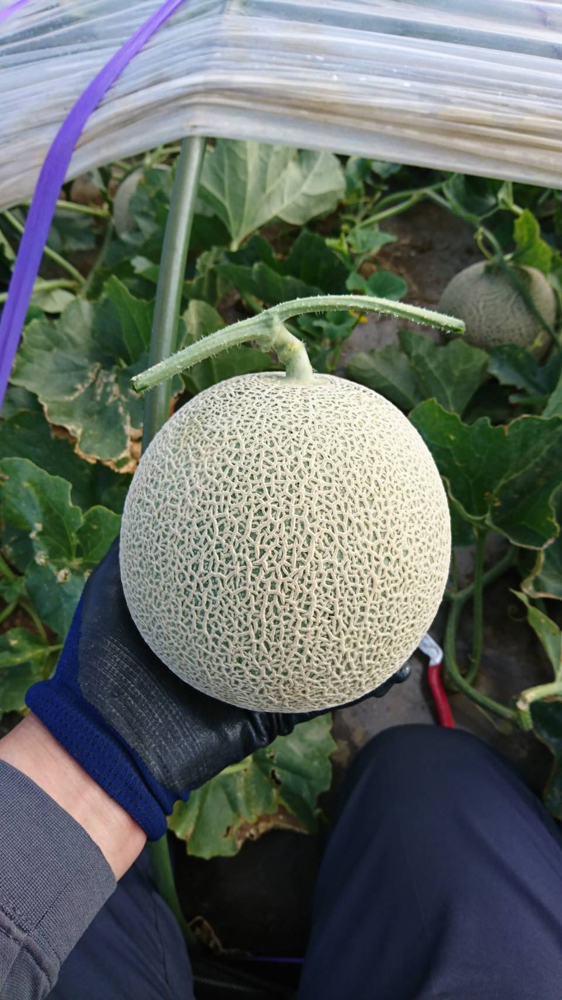
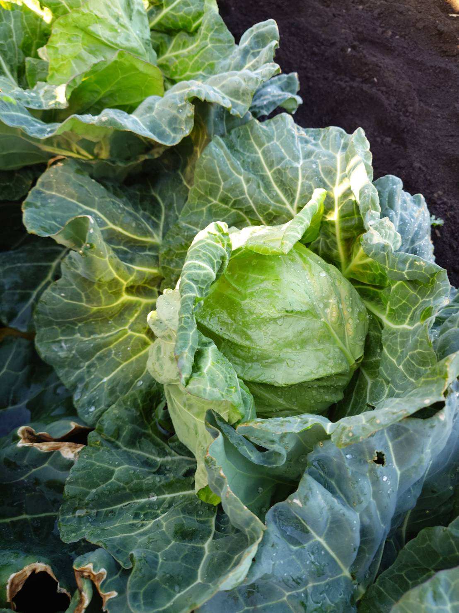

セット販売
メロン・スイカ・カボチャの季節のおすすめセット
メロン・スイカ・カボチャを中心に、
自家製アイスや甘酢漬けまでお届けします

旧三浦市の毘沙門地区で、米・野菜・果樹栽培を行っております。 当地域では江戸時代後期から梨の栽培が始められ、県内でも指折りの産地として知られています。
こだわっているのは、土づくり。
有機質を多く含んだ肥料を使用することで根の発育を促進しています。 稲刈り後の籾殻をふんだんに入れた土壌は触るとふかふかです。
地道な作業の積み重ねにより確立された品質が評価され、ホテル等への提供も行なっています。 梨本来の甘さとシャキっとした食感で、プロの料理人からも高い評価を頂いています。
丸万木村農園に自慢の商品を、是非ご賞味ください。